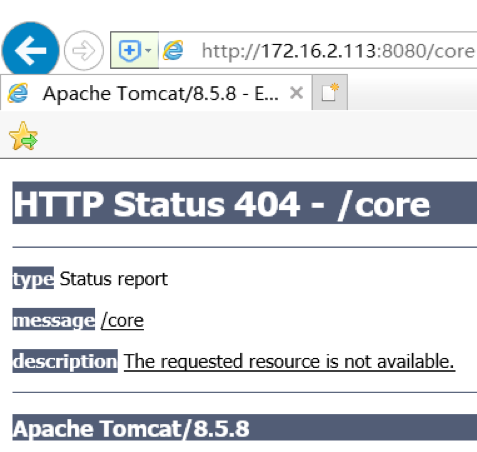
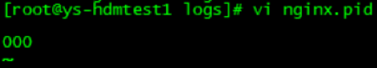

Verison 1.0.0
问题1
权限不够，导致redis无法正常启停
错误日志1
2481:M 08 Feb 15:07:57.716 # User requested shutdown...
2481:M 08 Feb 15:07:57.716 * Saving the final RDB snapshot before exiting.
2481:M 08 Feb 15:07:57.716 # Failed opening the RDB file dump.rdb (in server root dir /u01/HDM/redis-3.2.5/redis/bin) for saving: Permission denied
2481:M 08 Feb 15:07:57.716 # Error trying to save the DB, can't exit.
处理方式
原因是由于hdm无权限写dump文件，修改dump路径可以成功解决该问题
修改配置文件/u01/HDM/redis-3.2.5/redis.conf的dump路径
dir /u01/HDM/redis-3.2.5/logs
问题2
GLIBC版本不够，导致Redis无法正常启停
错误日志
处理方式
1、服务器上glibc库的版本是2.12，需要升级到2.17版本
下载地址：
http://ftp.gnu.org/gnu/glibc/glibc-2.17.tar.gz
（这里可以选择你所需要的版本）
2、安装部署
[hdm@mabuepm hdm]# tar -xf glibc-2.17.tar.gz
[hdm@mabuepm hdm]# cd glibc-2.17
[hdm@mabuepm glibc-2.17]# mkdir build; cd build
[hdm@mabuepm build]# ../configure --prefix=/usr --disable-profile --enable-add-ons --with-headers=/usr/include --with-binutils=/usr/bin
[hdm@mabuepm build]# make -j 16
[hdm@mabuepm build]# make install
[hdm@mabuepm hdm]# strings /lib64/libc.so.6 | grep GLIBC
[hdm@mabuepm hdm]$ strings /lib64/libc.so.6 | grep GLIBC
GLIBC_2.2.5
GLIBC_2.2.6
GLIBC_2.3
GLIBC_2.3.2
GLIBC_2.3.3
GLIBC_2.3.4
GLIBC_2.4
GLIBC_2.5
GLIBC_2.6
GLIBC_2.7
GLIBC_2.8
GLIBC_2.9
GLIBC_2.10
GLIBC_2.11
GLIBC_2.12
GLIBC_2.13
GLIBC_2.14
GLIBC_2.15
GLIBC_2.16
GLIBC_2.17
GLIBC_PRIVATE
我们可以看到部署成功后的glibc的版本为2.17
[hdm@mabuepm hdm]$ ldd --version
ldd (GNU libc) 2.12
Copyright (C) 2010 Free Software Foundation, Inc.
This is free software; see the source for copying conditions. There is NO
warranty; not even for MERCHANTABILITY or FITNESS FOR A PARTICULAR PURPOSE.
Written by Roland McGrath and Ulrich Drepper.
如若未升级成功，可以尝试重启服务器后再查看版本即可。
问题
tomcat启动报错too low setting for ?Xss，导致系统无法登陆
错误日志1
Caused by: java.lang.IllegalStateException: Unable to complete the scan for annotations for web application [/core] due to a StackOverflowError. Possible root causes include a too low setting for -Xss and illegal cyclic inheritance dependencies. The class hierarchy being processed was [org.bouncycastle.asn1.ASN1EncodableVector->
处理方式
因为tomcat启动会去扫描jar包，看错误信息org.bouncycastle.asn1.ASN1EncodableVector，是出在这个类，这个类似出现在bcprov.jar这个包，所以在tomcat的conf目录里面catalina.properties的文件，
在tomcat.util.scan.DefaultJarScanner.jarsToSkip=里面加上bcprov.jar过滤,如下：
修改：/u01/HDM/apache-tomcat-8.5.8/conf/catalina.properties
在tomcat.util.scan.StandardJarScanFilter.jarsToSkip尾部添加bcprov*.jar下：
tomcat.util.scan.StandardJarScanFilter.jarsToSkip=\
………………….
jetty-*.jar,oro-*.jar,servlet-api-*.jar,tagsoup-*.jar,xmlParserAPIs-*.jar,\
xom-*.jar,bcprov*.jar
登录HDM报 HTTP Status 404
问题
打开浏览器登录HDM报 HTTP Status 404 - /core

错误日志
查看tomcat的Catalina.out日志
`
21-Apr-2018 10:54:09.845 INFO [localhost-startStop-1] org.apache.catalina.startup.HostConfig.deployWAR Deploying web application archive /u01/HDM/apache-tomcat-8.5.8/webapps/core.war
21-Apr-2018 10:54:18.638 INFO [localhost-startStop-1] org.apache.jasper.servlet.TldScanner.scanJars At least one JAR was scanned for TLDs yet contained no TLDs. Enable debug logging for this logger for a complete list of JARs that were scanned but no TLDs were found in them. Skipping unneeded JARs during scanning can improve startup time and JSP compilation time.
21-Apr-2018 10:54:18.666 SEVERE [localhost-startStop-1] org.apache.catalina.core.StandardContext.startInternal One or more listeners failed to start. Full details will be found in the appropriate container log file
21-Apr-2018 10:54:18.670 SEVERE [localhost-startStop-1] org.apache.catalina.core.StandardContext.startInternal Context [/core] startup failed due to previous errors
21-Apr-2018 10:54:18.665 SEVERE [localhost-startStop-1] org.apache.catalina.core.StandardContext.listenerStart Error configuring application listener of class hbi.core.hdm.utils.HdmConLoadListener
java.lang.UnsupportedClassVersionError: hbi/core/hdm/utils/HdmConLoadListener : Unsupported major.minor version 52.0 (unable to load class hbi.core.hdm.utils.HdmConLoadListener)1
2
3
4
5
6
7
8
9
10
11
**处理方式**
将环境变量写入用户hdm的.bash_profile文件，见”添加永久环境变量”
#### 4、nginx file
停止nginx报No such file
**问题**
停止nginx服务报No such file错误

**错误日志**
```
nginx: [error] open() "/lb/nginx/logs/nginx.pid" failed (2: No such file or directory)
处理方式
在/lb/nginx/logs下建文件nginx.pid，任意输入一个数字

启动nginx报Address already in use
问题
启动nginx报Address already in use错误
错误日志1
nginx: [emerg] bind() to 0.0.0.0:80 failed (98: Address already in use)
处理方式
说明80端口被占用，杀掉这个进程：
killall -9 nginx
反序列化漏洞
Oracle WebLogic
Server的T3通讯协议的实现中存在反序列化漏洞。远程攻击者可通过利用该漏洞发送特殊的报文完全控制WebLogic
Server。
受影响的官方支持版本:10.3.6.0, 12.1.3.0, 12.2.1.2 和 12.2.1.3
厂商补丁:
Oracle已经为此发布了一个安全公告（cpuapr2018-3678067）以及相应补丁:
cpuapr2018-3678067：Oracle Critical Patch Update Advisory - April 2018
链接：http://www.oracle.com/technetwork/security-advisory/cpuapr2018-3678067.html
CVE编号:CVE-2018-2628
组件安全漏洞
Oracle WebLogic Server组件的WLS Core
Components子组件存在安全漏洞。攻击者可利用该漏洞未授权读取、更新、插入或删除数据，影响数据的保密性、可用性和完整性。
受影响的官方支持版本: 10.3.6.0, 12.1.3.0, 12.2.1.2 和 12.2.1.3
厂商补丁：
Oracle已经为此发布了一个安全公告（Oracle Critical Patch Update
Advisory）以及相应补丁:
Oracle Critical Patch Update Advisory：Oracle Critical Patch Update Advisory -
July 2018
链接：http://www.oracle.com/technetwork/security-advisory/cpujul2018-4258247.html
CVE编号:CVE-2018-2893、CVE-2018-2894、CVE-2018-2935、CVE-2018-7489、CVE-2018-2987、CVE-2018-2998
Apache Log4j 2.x \<
2.8.2版本，若使用TCP或UDP套接字服务器接收其他应用的序列化日志事件，攻击者发送构造的二进制负载，反序列化时，可执行任意代码。
厂商补丁：
目前厂商已经发布了升级补丁以修复这个安全问题，请到厂商的主页下载：
Oracle Fusion Middleware中的Oracle WebLogic Server组件的Web
Container子组件存在安全漏洞。攻击者可利用该漏洞未授权读取数据，影响数据的保密性。
受影响的官方支持版本: 12.1.3.0, 12.2.1.2 和 12.2.1.3
厂商补丁:
Oracle已经为此发布了一个安全公告（cpujan2018-3236628）以及相应补丁:
cpujan2018-3236628：Oracle Critical Patch Update January 2018
链接：http://www.oracle.com/technetwork/security-advisory/cpujan2018-3236628.html
CVE编号:CVE-2018-2625
Jndi数据源读取
Weblogic 上定义好数据源后，启动部署HDM
1 | JNDI naming exception: javax.naming.NameNotFoundException。 |
解决方法：
在profiles/dev/config.properties配置文件中修改
1 | db.jndiName=hbi_dev |
（说明：tomcat 中是db.jndiName= java:comp/env/jdbc/hbi_dev）
参考链接：
http://eco.hand-china.com/doc/hap/latest/dev_guide/01.getting_start/10_deployment.html
直接打war包，Tomcat部署没有问题，但是部署到服务器的Weblogic始终会报错，No
SuchMethod
Error。因为Tomcat会对部署的.war应用包进行自动监控、解包，所以不会出现提到的问题。而WebLogic并不会自动解包.war，一个文件被打包入了.war文件，就不存在目录结构了，因此需要手动解压.war包，以目录形式在Weblogic中进行部署。
解决方法：
1、在根目录下加weblogic.xml，设置优先加载我们项目自己的jar包，就不会去先加载weblogic的jar包，而出现问题。
weblogic.xml如下：
1 | <?xml version='1.0' encoding='UTF-8'?\> |
2、解压.war包
1 | mdkir core |
xml文件通配符问题（可跳过）
在Weblogic下，源路径不支持以 ** 或者 * 开头, 必须是一个确定的目录开头,
中间,结尾可以使用通配符。
解决方法：
如applicationContext.xml中的
1 | <context:component-scan base-package="\*\*.\*.service"/> |
修改为类似这样
1 | <context:component-scan base-package="com.\*\*.\*.service"/> |
另外web.xml,servlet-context.xml等也有类似问题
（说明：目前在Weblogic12.2.1.3中core.war按目录部署后不存在通配符问题，如在其他版本中遇到class文件加载不到的问题可按如上解决）
静态资源加载
HDM/ resources /下静态资源文件,Weblogic服务器将/resources /
path尝试通过JAX-RS服务处理这些请求，最终返回404未找到。这个问题导致在/ resources
/
path下的所有静态文件都不会呈现，因为JAX-RS服务“拦截”请求并将其发送到REST服务，而不是呈现静态内容。
解决方法：
在web.xml中添加
1 | <servlet> |
参考连接：
https://community.oracle.com/thread/4048528
获取文件上下文
真实路径下获取文件异常，是因为Tomcat，JBoss获取根路径后面会加分隔符/，而Weblogic没有。
解决方法：
在profiles/dev/config.properties配置文件中添加#file separator
1 | file.separator = / |
（说明：Tomcat部署时file separator值为空，weblogic部署时值为/）

Linux下Weblogic启动异常
1、若为root用户上传解压core，hdm用户在weblogic启动部署时，会发生空指针异常或Permission
denied，是由于用户权限不足导致。
解决方法：
su切换至root用户
chown –R hdm core/
2、<BEA-141281> \
解决办法：
一.删掉Domain下的*.lok文件
进入到domain_home下：
1 | cd /u01/Oracle/Middleware/user_projects/domains/base_domain |
将edit.lok文件删掉rm edit.lok
2.删除config.lok
进入到domain_home/config下：
1 | cd /u01/Oracle/Middleware/user_projects/domains/base_domain/config/ |
将config.lok文件删掉
rm config.lok
3.删除AdminServer.lok
1 | cd /u01/Oracle/Middleware/user_projects/domains/base_domain/servers/AdminServer/tmp |
4.删除EmbeddedLDAP.lok
1 | /u01/Oracle/Middleware/user_projects/domains/base_domain/servers/AdminServer/data/ldap/ldapfiles |
5.删掉Domain下的*.DAT文件：
进入到domain_home当中
1 | cd /u01/Oracle/Middleware/user_projects/domains/base_domain |
找到文件被删掉
1 | [oracle\@base base_domain]\$ find servers/ -name "\*.DAT" |
二、继续报错
1 | <BEA-280061> \<The persistent store “_WLS_AdminServer” could not be |
解决办法：
因为下面两个文件没有删除，删除掉重启即可。
1 | servers/AdminServer/data/store/diagnostics/WLS_DIAGNOSTICS000000.DAT |
GC overhead limit exceeded

参考文档：https://blog.csdn.net/democreen/article/details/82901650
https://happyqing.iteye.com/blog/1933362
解决方法：
修改domain域下面的配置文件setDomainEnv.sh中参数的值：
WLS_MEM_ARGS_64BIT=”-Xms2048m -Xmx2048m”
WLS_MEM_ARGS_32BIT=”-Xms2048m -Xmx2048m”
文件路径/home/app/Oracle/Middleware/user_projects/domains/hdm_domain/bin